15 tips to survive the ocean's depths
No map, no hand-holding — just the essentials, each with a screenshot. Get your bearings, watch your vitals, scan everything, and go deeper only when you're ready.
Condensed from the official guide
Keep it short — the deep rewards the prepared.
1 · Use the Lifepod to orient
There's no in-game map. Use the HUD compass and your pause-screen coordinates. The Lifepod is your fixed reference — it holds the NoA Terminal (objectives), Biobed (respawn), Fabricator, and Pod Locker (storage).
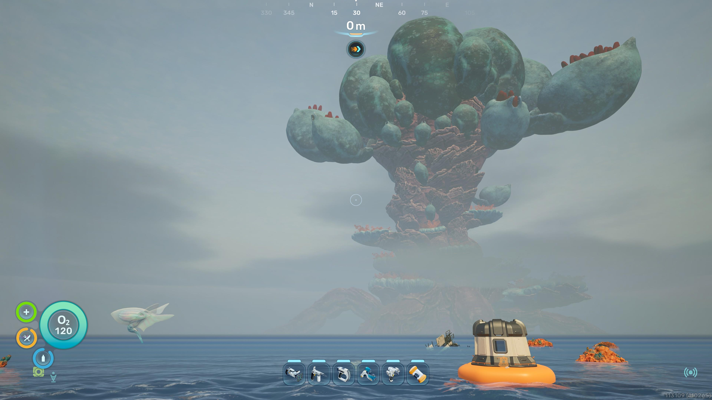
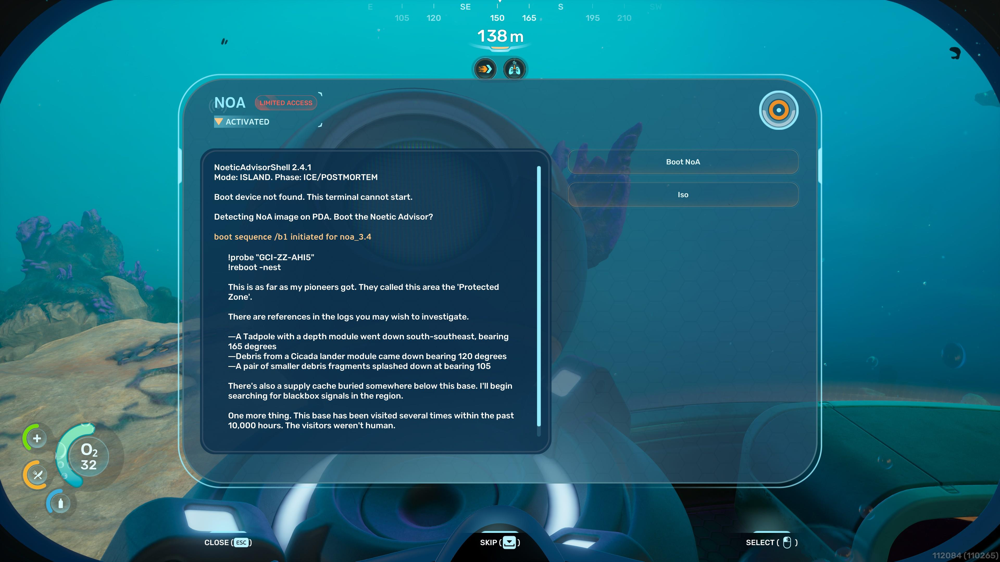
2 · Check NoA for blackbox goals
The Noetic Advisor terminal periodically pings points of interest — blackboxes, sunken habitats, alien life — shown as on-screen signals and icons.
3 · Watch your vitals
Oxygen: 45 → 75 (Standard Tank) → 120 (High Capacity). First Aid Kit +50 HP; Acid Raion gel +10. Nutrient Blocks +40 food. One Water Slug → +40 thirst.
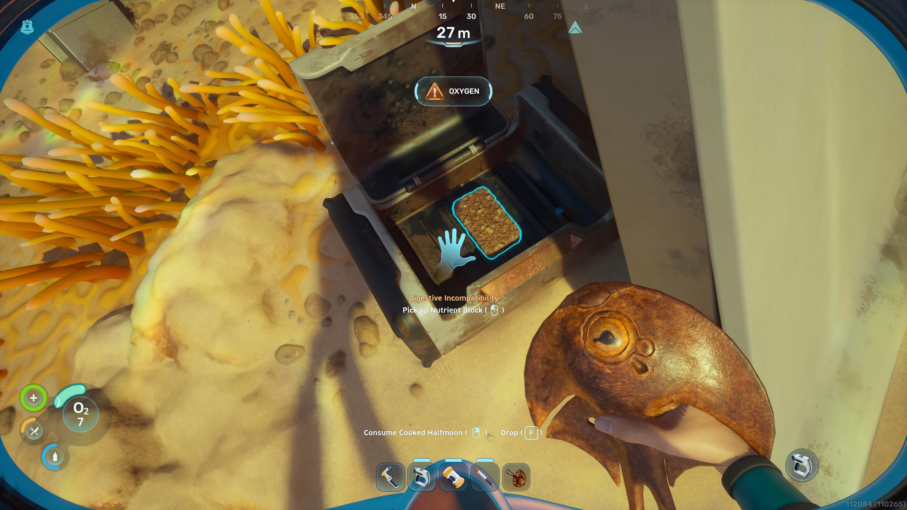
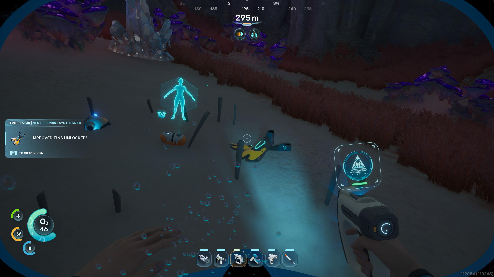
4 · Scan everything
Most objects unlock their blueprints when scanned. Scanner = 2 Titanium + 2 Quartz + 1 Battery. Scannables glow yellow.
5 · Use tools to gather more ore
The Survival Multitool (3 Titanium) breaks medium nodes. The Sonic Resonator (1 Battery + 2 Titanium + 2 Lead + 1 Wiring Kit) destroys bloom nodes and large veins.
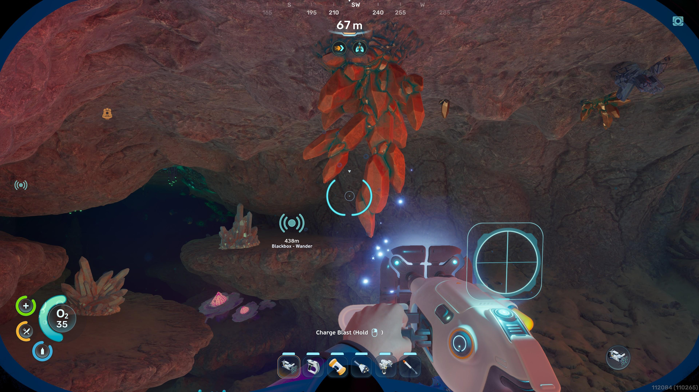
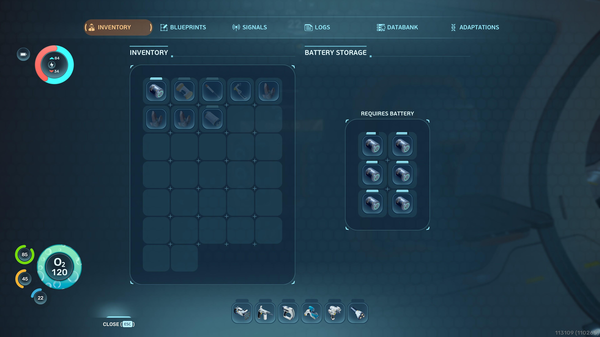
6 · Keep batteries charged
Basic Battery = 2 Copper + 1 Acidic Raion Pouch. Press R to swap. A Battery Terminal (2 Titanium + 2 Quartz + 1 Copper Wire) recharges empties.
7 · Manage your inventory
You start with 20 slots. Pod Locker holds 35; wall lockers 20, floor lockers 30; portable lockers 15 (carry them with you).
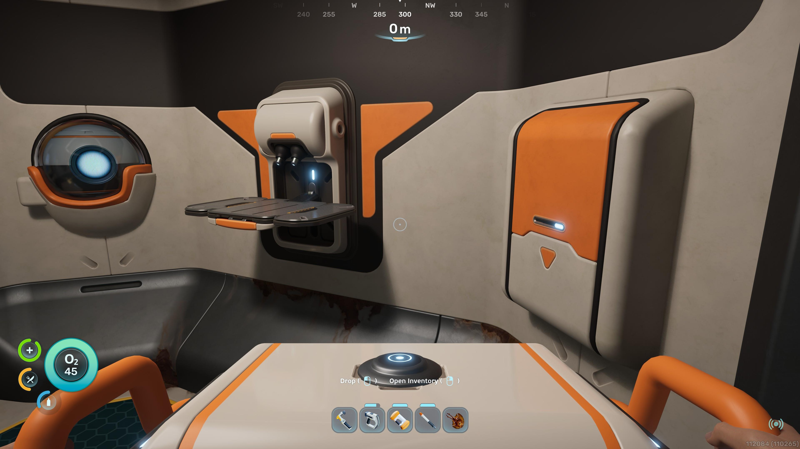
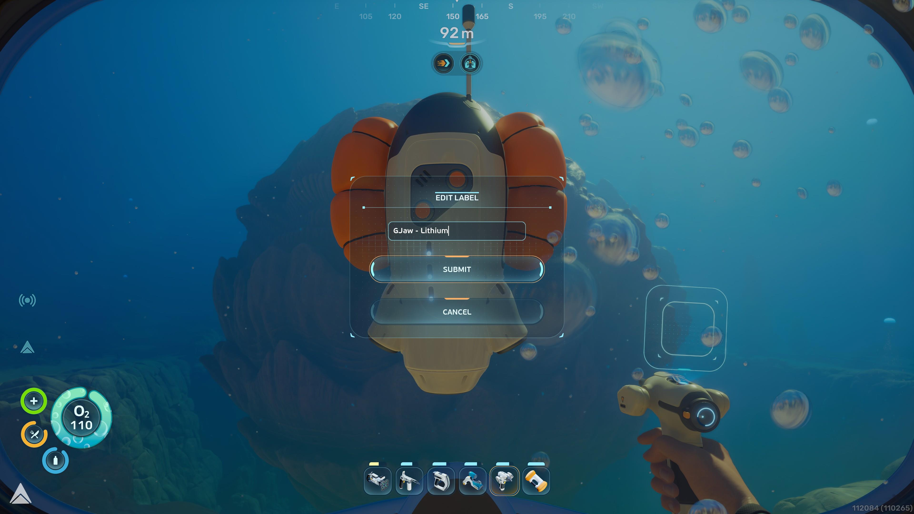
8 · Drop beacons
A Beacon costs 1 Titanium + 1 Copper. Plant them at good resource spots so you can find your way back.
9 · Scare enemies with decoy flares
Decoy flares (1 Titanium + 1 Quartz) drive off hostile fish like Marrowbreachers and Needler Mangoes.
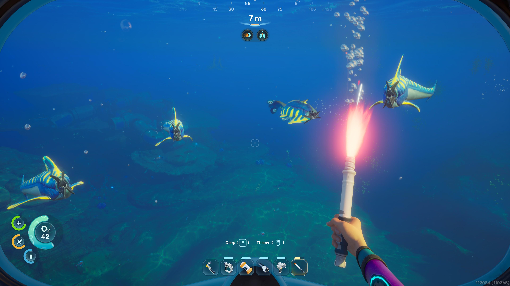
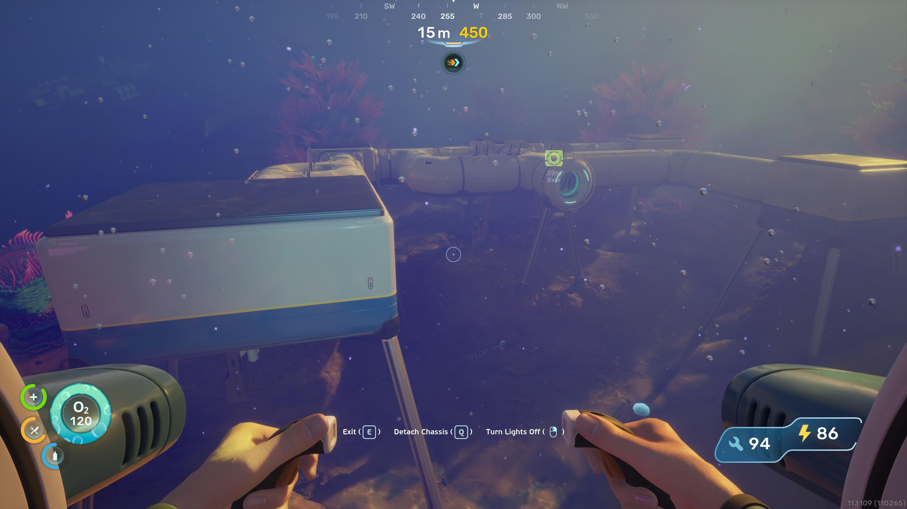
10 · Build your own base
Once you have the Habitat Builder, stock up on titanium, copper, and quartz, then lay corridors, rooms, machines, and furniture.
11 · Unlock the Tadpole
Scan three Tadpole fragments. Moonpool (5 Titanium), Tadpole Dock (2 Titanium + 1 Silver + 2 Copper Wire), Vehicle Fabricator (2 Titanium + 1 Copper + 2 Glass), core (2 Titanium + 1 Glass + 1 System Chip + 1 Power Cell).
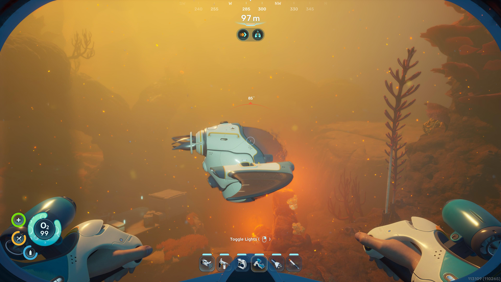
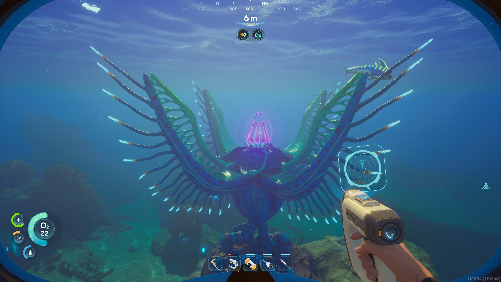
12 · Adaptations & the Biolab
Adaptations come from Angel Combs — large pink bulbs that rewrite your DNA (Digestion, Heat Tolerance).
13 · Biomods & Biobed upgrades
The Welcome Center's Biolab holds active & passive Biomods (including Dash). Colonist bunkers hide Biobeds with permanent hotbar and inventory upgrades.
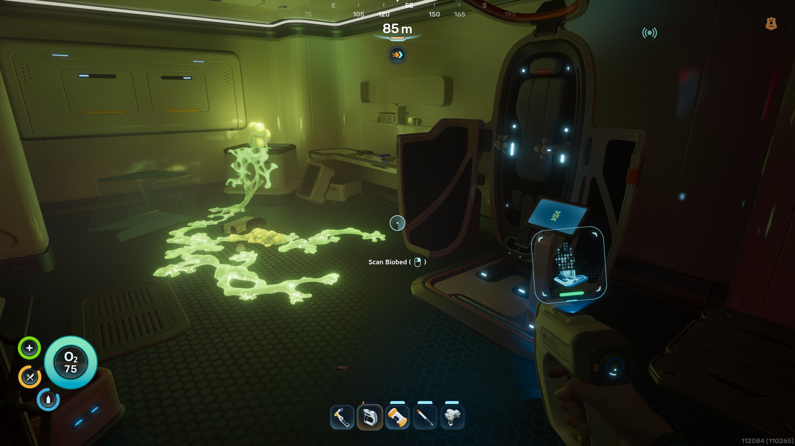
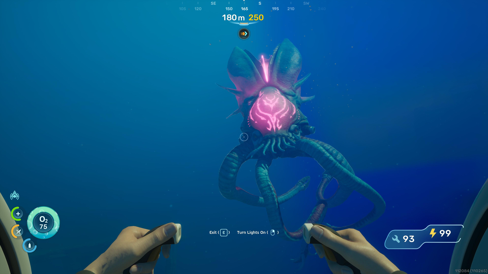
14 · Beware Leviathans
Most monsters flee from flares, but Leviathans must be avoided outright. They'll crush you — or your Tadpole, which soaks the damage instead.
15 · Keep exploring
Glowing coral reefs, alien runes — the ocean rewards the curious. Push into the unknown.
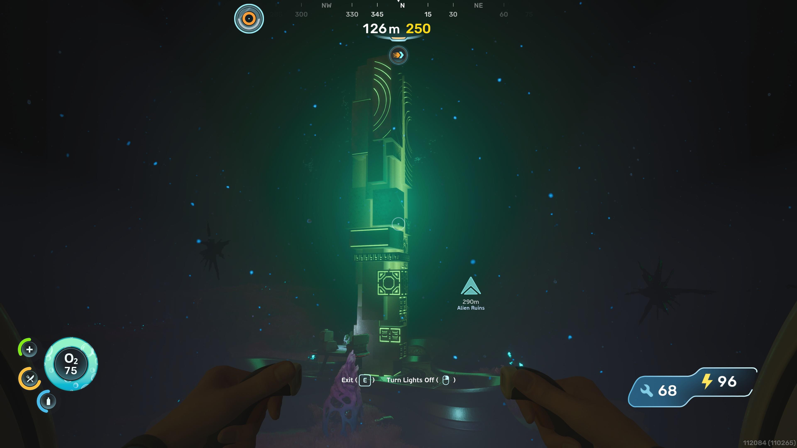
Tips condensed from the official Epic Games survival guide — see About & FAQ. Subnautica 2 is in Early Access; figures can still change.
What the game never tells you
Subnautica 2-exclusive systems that trip players up. Compiled from GameRant, Polygon and Steam community guides.
Digestive incompatibility
Until you unlock the Digestion Adaptation (Angel Comb, ~160 m NNE), eating local flora and fauna does nothing or hurts you. Stick to Nutrient Blocks early.
Heat intolerance
Hot biomes (Hydrothermal Vents) damage you until you cure the infected Angel Comb with the Sonic Resonator and unlock Heat Tolerance.
Large veins need the Sonic Resonator
Small and medium nodes can be hand-harvested, but big Silver/Gold/Quartz deposits require the Sonic Resonator. Don't panic when a node won't break.
Silver is the rarest mineral
It sits mostly near blackboxes and bloom clusters — look for green anemone-like plants as markers.
Tadpole crush depth & hull damage
Going too deep damages the hull. Craft the Depth Module at a Modification Station before descending further.
Angel Comb puzzle
Don't hit the Angel Comb itself — first destroy every surrounding bloom node, then attack the juvenile. Follow the roots to find them all.
Metal Farm duplication
The Metal Farm replicates resources — Troilite needs 10 to start the loop.
Infinite water trick
Flash Slugs at a mid-game base respawn ~20–25 seconds after you look away. Harvest repeatedly for unlimited isotonic water.
The Collector Leviathan is not a boss
It can't be killed — treat it as an environmental hazard. It grabs and throws the Tadpole, so stay low and hug the seabed.
Switch off quest markers
Inventory → Signals tab lists every destination and blackbox with an on/off toggle. Use it to declutter the HUD (and to fix stuck markers).
Common default keybindings
Bindings are rebindable in settings — these are the game's defaults.
🕹️ Movement
WASD swim · Space ascend · Ctrl / C descend · Shift sprint · Mouse look & steer
🖐️ Interact
E interact / pick up · F flashlight · Tab inventory & PDA · R swap battery
🔧 Tools
Left click use tool (Scanner, Multitool) · F flashlight toggle · build mode from the Habitat Builder
🧭 Navigation
Esc opens the PDA — coordinates and signals live there · the HUD compass is always on. There is no world map.